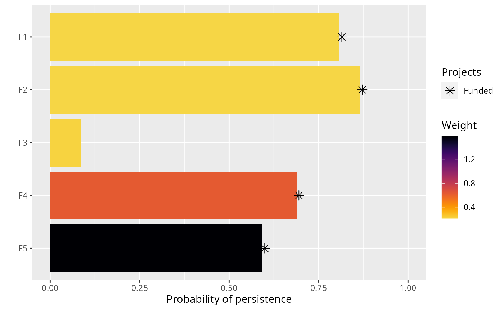
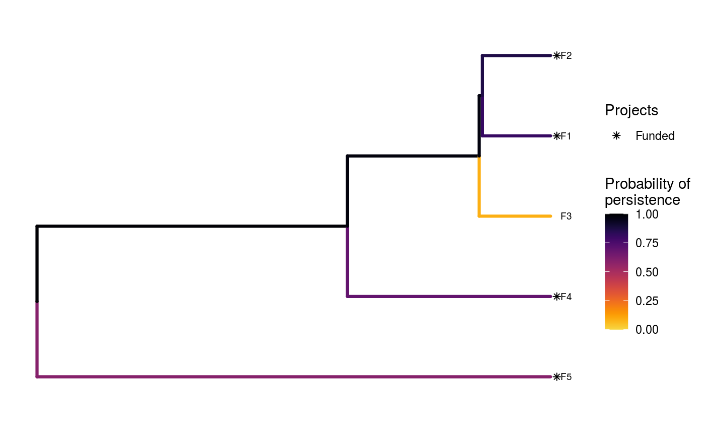

Create a plot to visualize how well a solution to a project prioritization problem will maintain biodiversity.
# S3 method for ProjectProblem plot(x, solution, n = 1, symbol_hjust = 0.007, ...)
| x | project prioritization |
|---|---|
| solution |
|
| n |
|
| symbol_hjust |
|
| ... | not used. |
A ggplot object.
The type of plot that this function creates depends on the problem objective. If the problem objective contains phylogenetic data, then this function plots a phylogenetic tree where each branch is colored according to its probability of persistence. Otherwise, if the problem does not contain phylogenetic data, then this function creates a bar plot where each bar corresponds to a different feature. The height of the bars indicate each feature's probability of persistence, and the width of the bars indicate each feature's weight.
Features that directly benefit from at least a single completely funded project with a non-zero cost are depicted with an asterisk symbol. Additionally, features that indirectly benefit from funded projects---because they are associated with partially funded projects that have non-zero costs and share actions with at least one funded project---are depicted with an open circle symbol.
This function is essentially a wrapper for
plot_feature_persistence and
plot_phylo_persistence, so refer to the documentation
for these functions for more information.
# load data data(sim_projects, sim_features, sim_actions) # build problem without phylogenetic data p1 <- problem(sim_projects, sim_actions, sim_features, "name", "success", "name", "cost", "name") %>% add_max_richness_objective(budget = 400) %>% add_feature_weights("weight") %>% add_binary_decisions() # solve problem without phylogenetic data s1 <- solve(p1)#> Optimize a model with 47 rows, 47 columns and 122 nonzeros #> Variable types: 0 continuous, 42 integer (42 binary) #> Semi-Variable types: 5 continuous, 0 integer #> Coefficient statistics: #> Matrix range [9e-02, 1e+02] #> Objective range [2e-01, 2e+00] #> Bounds range [1e+00, 1e+00] #> RHS range [1e+00, 4e+02] #> Found heuristic solution: objective -0.0000000 #> Presolve removed 3 rows and 3 columns #> Presolve time: 0.00s #> Presolved: 44 rows, 44 columns, 112 nonzeros #> Variable types: 2 continuous, 42 integer (42 binary) #> Presolved: 44 rows, 44 columns, 112 nonzeros #> #> #> Root relaxation: objective 1.512928e+00, 15 iterations, 0.00 seconds #> #> Nodes | Current Node | Objective Bounds | Work #> Expl Unexpl | Obj Depth IntInf | Incumbent BestBd Gap | It/Node Time #> #> * 0 0 0 1.5129280 1.51293 0.00% - 0s #> #> Explored 0 nodes (15 simplex iterations) in 0.00 seconds #> Thread count was 1 (of 4 available processors) #> #> Solution count 1: 1.51293 #> #> Optimal solution found (tolerance 1.00e-01) #> Best objective 1.512928010109e+00, best bound 1.512928010109e+00, gap 0.0000%# build problem with phylogenetic data p2 <- problem(sim_projects, sim_actions, sim_features, "name", "success", "name", "cost", "name") %>% add_max_phylo_div_objective(budget = 400, sim_tree) %>% add_binary_decisions() # solve problem with phylogenetic data s2 <- solve(p2)#> Optimize a model with 50 rows, 50 columns and 143 nonzeros #> Model has 3 piecewise-linear objective terms #> Variable types: 3 continuous, 42 integer (42 binary) #> Semi-Variable types: 5 continuous, 0 integer #> Coefficient statistics: #> Matrix range [9e-02, 1e+02] #> Objective range [2e-01, 2e+00] #> Bounds range [1e+00, 1e+00] #> RHS range [1e+00, 4e+02] #> Found heuristic solution: objective 0.3355236 #> Presolve removed 3 rows and 3 columns #> Presolve time: 0.00s #> Presolved: 50 rows, 3044 columns, 3133 nonzeros #> Variable types: 3002 continuous, 42 integer (42 binary) #> Presolve removed 3 rows and 3 columns #> Presolved: 47 rows, 3041 columns, 3127 nonzeros #> #> #> Root relaxation: objective 2.856427e+00, 23 iterations, 0.00 seconds #> #> Nodes | Current Node | Objective Bounds | Work #> Expl Unexpl | Obj Depth IntInf | Incumbent BestBd Gap | It/Node Time #> #> * 0 0 0 2.8564267 2.85643 0.00% - 0s #> #> Explored 0 nodes (23 simplex iterations) in 0.01 seconds #> Thread count was 1 (of 4 available processors) #> #> Solution count 1: 2.85643 #> #> Optimal solution found (tolerance 1.00e-01) #> Best objective 2.856426731235e+00, best bound 2.856426731235e+00, gap 0.0000%